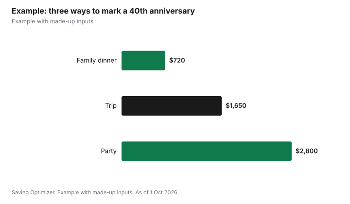

Events · Canada
Anniversary Party vs Trip vs Dinner: Costs and How to Choose
For a big anniversary, the choice is usually a party for family and friends, a trip for the couple, or a special dinner. A dinner for two costs least; a trip costs the most per person but is private; a party's cost depends on guest count, venue and alcohol. In Ontario, an anniversary party at home needs no alcohol permit for invited guests, while a rented hall without a liquor licence needs a $50-a-day special occasion permit for free drinks. Adult children often host a parents' 25th, 40th or 50th; otherwise the couple usually pays. For 50th anniversaries and later, the Governor General sends free greetings on request, and The King from the 60th.
Key takeaways
- Ask what the couple actually wants before planning a surprise.
- Dinner: lowest cost and least planning.
- Trip: private and memorable; book early for peak season.
- Party: cost scales with guests, venue and alcohol.
- Ontario permit for free drinks at an unlicensed venue: $50 a day.
- Free greetings: Governor General from the 50th, The King from the 60th.
- Example with made-up inputs: comparing the three for a 40th.
How to choose
| Option | Best for | Main cost drivers | Planning effort |
|---|---|---|---|
| Dinner | Couples who prefer something quiet | Restaurant, drinks, tip | Low |
| Trip | Couples who want time together | Travel, lodging, activities | Medium |
| Party | Families who want to gather | Venue, food, alcohol, rentals | High |
| Combination | Big milestones | Dinner or party plus a short trip | High |
A practical test: if the couple would rather spend the day with grandchildren and friends, plan a party; if they rarely get time alone, a trip; if they dislike fuss, a dinner. For a surprise, quietly ask a sibling or close friend of the couple which they would prefer.
Who pays
The couple usually pays for their own celebration. For major milestones such as the 25th, 40th, 50th and 60th, adult children or close family often host a party, or pool money toward a trip as a gift. When several siblings share the cost, agree on a budget and split before booking anything, and decide whether spouses and grandchildren contribute. Guests at a party are not expected to pay, though a no-host bar at a restaurant is acceptable if it is clear on the invitation.
Throwing a party
An anniversary party follows the same cost logic as any family party. At home, there is no venue fee and, in Ontario, no permit for serving invited guests. At a rented hall without a liquor licence, the AGCO's private event permit is $50 a day if drinks are free and $150 a day if you sell drinks, and the event must be invitation-only and not advertised. A restaurant's private room uses the restaurant's own licence. For rates, a Toronto community centre charges $104 an hour for its full auditorium without alcohol and $157 with alcohol in 2026, before HST.
- Display wedding photos and a timeline of the couple's years together.
- Ask guests to bring a written memory or card instead of gifts.
- A short toast from each child or a grandchild keeps the program simple.
- Recreate a detail from the wedding, such as the cake flavour or first-dance song.
Planning a trip
A trip's cost depends on season, distance and length. Shoulder seasons, shorter stays and driving distance can bring it down. If children are giving the trip as a gift, a booked weekend is more personal than cash, but check dates with the couple first. If the trip involves flying abroad, travel medical insurance matters more for older couples, and the policy details and pre-existing condition rules should be read carefully. A trip can also follow a smaller family dinner, so the extended family still gets to celebrate.
A special dinner
A dinner can be for the couple alone or for immediate family. For a family dinner at a restaurant, a set menu gives a predictable cost; ask whether the restaurant adds an automatic gratuity for large groups and whether a private room has a food and drink minimum. Hosting dinner at home with a hired cook or catered meal is another option that keeps it private.
Free greetings for big anniversaries
The Office of the Secretary to the Governor General arranges anniversary greetings from the Governor General for 50th anniversaries and later, and from His Majesty The King for 60th anniversaries and later. Requests must arrive at least eight weeks before the delivery date and can be made up to a year in advance; greetings are mailed about a month before. On request, they are sent every five years from the 50th and every year from the 70th. Past dates can be backdated up to 12 months for the Governor General and six months for The King. A framed greeting makes a meaningful centerpiece at a party.
Renewing vows
Some couples renew their vows at a milestone anniversary, either as part of a party or as a small ceremony on their own. Because the couple is already married, a vow renewal is usually a symbolic ceremony, and it can be led by a family member, a friend or a religious leader; ask the officiant whether any paperwork applies. Costs are usually limited to the venue, flowers and photography, and the ceremony can be as short as a few minutes before dinner or a toast. If a place of worship is involved, ask about any fee or donation it expects.
Gift ideas that suit each option
- Party: a photo book or slideshow assembled by the family.
- Trip: a guidebook, luggage tags or a pre-booked activity at the destination.
- Dinner: a printed menu or a bottle from the year they married, if available.
- Any option: an experience gift such as concert or theatre tickets.
Example with made-up inputs
These numbers are an example with made-up inputs. Two adult children want to mark their parents' 40th. Option A is a dinner for eight family members at $90 per person including tax and tip, $720. Option B is a three-night trip for the couple: lodging $750, travel $300, meals and activities $600, total $1,650. Option C is a party for 60 guests at a community hall: room and kitchen $700, a $50 permit, insurance $90, food $1,100, drinks $600, decor and cake $260, total $2,800. Split two ways, the costs are $360, $825 and $1,400 per child.
| Option | Total | Per child (2) |
|---|---|---|
| Family dinner for 8 | $720 | $360 |
| Three-night trip for the couple | $1,650 | $825 |
| Party for 60 at a hall | $2,800 | $1,400 |

Steps
- Find out what the couple would prefer.
- Agree on who pays and the budget.
- Pick the option and the date.
- For a party, check venue and alcohol rules.
- Book early for travel or popular venues.
- Request a free greeting for the 50th or later at least eight weeks ahead.
Common mistakes
- Planning a surprise party for a couple who dislike crowds.
- Booking a trip without checking the couple's calendar or health.
- Forgetting the alcohol permit at an unlicensed hall.
- Missing the eight-week window for greetings.
- Not agreeing on the split among siblings first.
Related: milestone birthday parties and renting a hall.
Sources
- Alcohol and Gaming Commission of Ontario, Special occasion permits and private event permits, agco.ca, as of 1 Oct 2026.
- Office of the Secretary to the Governor General, Request Birthday and Anniversary Greetings, gg.ca, as of 1 Oct 2026.
- Ralph Thornton Community Centre, Rates - Updated for 2026, ralphthornton.org, as of 1 Oct 2026.
- Dinner, trip and party amounts in the example are made-up inputs.
Frequently asked questions
Who pays for an anniversary party?
Usually the couple, but adult children often host for big milestones such as the 25th, 40th or 50th.
Is a trip or a party better for an anniversary?
It depends on the couple. A trip gives private time; a party brings family together.
Do I need a permit to serve alcohol at an anniversary party in Ontario?
Not at home for invited guests. At a rented venue without a liquor licence, $50 a day for free drinks or $150 for a cash bar.
How do I get an anniversary message from the Governor General?
Request it at least eight weeks ahead for a 50th anniversary or later. The King sends greetings from the 60th.
How often are anniversary greetings sent?
On request, every five years from the 50th and every year from the 70th.
How can we keep an anniversary celebration affordable?
Choose a dinner or home party, ask for memories instead of gifts, and split costs among family.
Researched and drafted with AI assistance and fact-checked against official Canadian sources. How we create content.
Disclosure: Saving Optimizer may earn a commission if a partner link is added later. No partnership is claimed on this page. Education only.